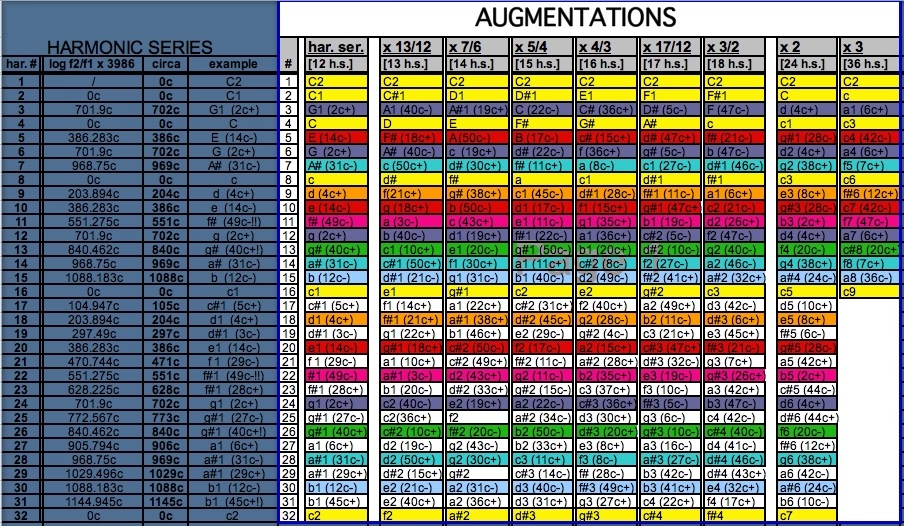

Proportional augmentations of the intervals in the harmonic series create an infinite number of augmented series. Except for the octave repetitions of the fundamental, the frequencies in the harmonic series are not the pitches of the tempered system used in Western tonal music. After calculating the distance between the first thirty-two harmonics (f2) and their closest lower fundamentals (f1), using the formula: c = log f2/f1 x 3986, I determined the microtonal deviations of individual harmonics in relation to equal temperament. That allowed me to express in cents the distances between the successive overtones. Starting with the lowest interval of the harmonic series, I calculated the following order: 1200c, 702c, 498c, 386c, 316c, 267c, 231c, 204c, 182c, 165c, 151c, 138c, 129c, 119c, 112c, 105c, 99c, 93c, 89c, 85c, 80c, 77c, 74c, 71c, 67c, 66c, 63c, 60c, 59c, 57c, and 55c. This order serves as the foundation of my augmentation technique.
